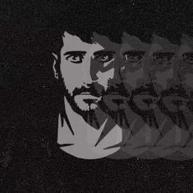

Benvenuto su Boolzapp!
Questo è un tutorial rapido.
Puoi cambiare tra tema scuro e tema chiaro cliccando l'icona del sole o della luna nell'header della colonna di sinistra, accanto al nome Francesco.

Francesco
Ricevi notifiche di nuovi messaggi
{{ notificationsActive ? 'Disattiva notifiche desktop' : 'Attiva notifiche desktop' }}-
{{ contact.name }}
{{ activeContact.name }}
Ultimo accesso alle {{ getLastMessageTime(activeContact) }}